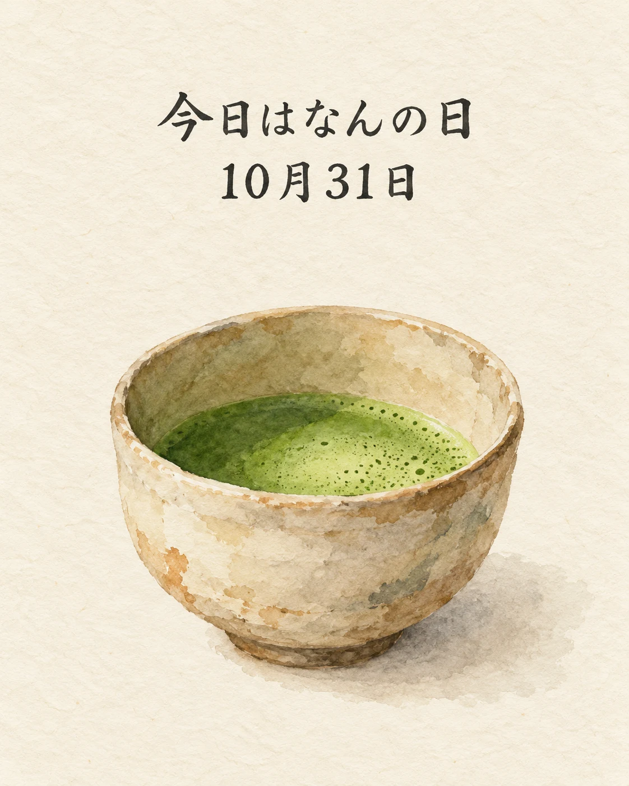

今日は、京都・阿弥陀寺で「秋の上京茶会」が開かれます🍵
上京茶会は、茶の湯文化を受け継ぎ、広めるために、上京区文化振興会と上京区役所が昭和40年から続けている催しです。2026年の秋は、10月31日が開催日です。
一碗のお茶の香りや、器に感じる季節の趣。そうした小さな味わいを大切にする心は、和食を楽しむひとときにも通じますね。
季節の味わいとともに、心ほどけるひとときをお過ごしください✨
京都の茶の湯文化を受け継ぐ催し
会場は阿弥陀寺（京都市上京区寺町通今出川上る鶴山町14）。主催は上京区文化振興会・上京区役所です。公式案内の開催時間は9:00〜14:30で、当日のお茶券販売はありません。当店主催の催しではなく、饗応 元の参加や茶の提供を案内するものではありません。
出典：京都市上京区役所「秋の上京茶会」の開催（2026年8月31日）、上京区役所 2026年10月31日のイベント情報、お茶事お茶会.com イベント一覧（2026年10月31日確認）。